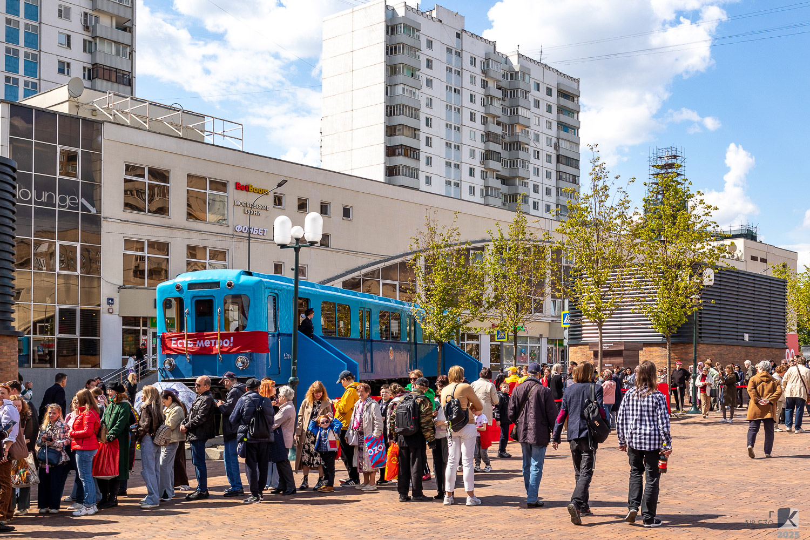
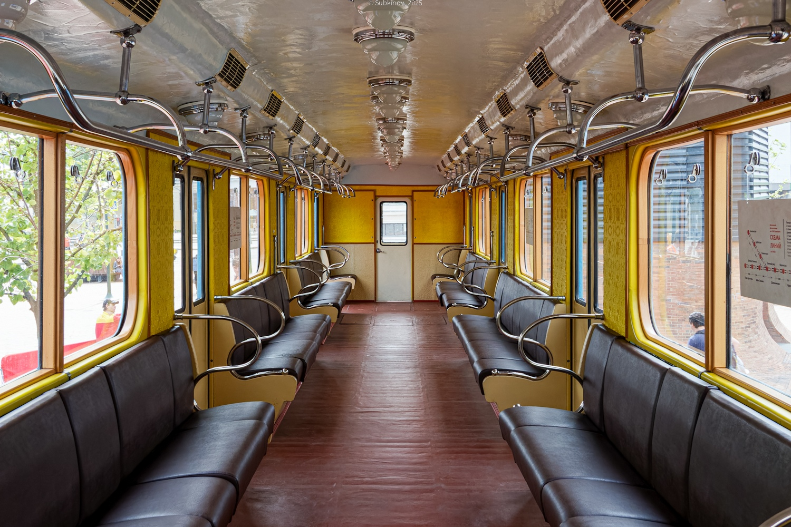

Г №530
Вагон типа Г №530 — музейный экспонат Московского метрополитена. Построен в июле 1952 года. Один из немногих сохранившихся вагонов этого типа, участвует в выставках на станции «Партизанская».
Общая информация
📅 Постройка
Июль 1952
Модель: Г
📍 Текущее местонахождение
Народный музей Московского метрополитена
С 2015 года — музейный
Назначение: Музейный
История вагона
Постройка
Вагон построен на Мытищинском машиностроительном заводе.
Поступление в депо
Вагон поступил в депо ТЧ-2 «Сокол».
Перевод в ТЧ-5
Вагон передан в депо ТЧ-5 «Калужское».
Списание
Вагон списан с пассажирской эксплуатации.
Библиотека в депо
Перегнан в ТЧ-3 «Измайлово», использовался в качестве библиотеки в депо.
Перевод в ТЧ-12
Вагон перегнан в ТЧ-12 «Новогиреево».
Музейный статус
Восстановлен и зачислен на баланс метрополитена в качестве музейного.
Текущее состояние: Эксплуатируется
Выставка на «Партизанской»
Установлен в сквере Московского метро на станции «Партизанская» в рамках выставки вагонов.
Технические характеристики
Модель
Г
Номер
530
Год постройки
1952
Тип
Моторный
Назначение
Музейный
Статус
Эксплуатируется
📊 Данные из базы: Модель — Г; построен — 07.1952; текущее состояние — эксплуатируется; назначение — музейный; депо/парк — Народный музей Московского метрополитена.
Фотогалерея

📸 mosbin

📸 Subkinov
Нажмите на фото для увеличения
«Вагон Г №530 — единственный сохранившийся представитель своего типа. Он пережил списание, служил библиотекой в депо и вернулся в качестве музейного экспоната. Сегодня его можно увидеть на выставках на станции „Партизанская“».